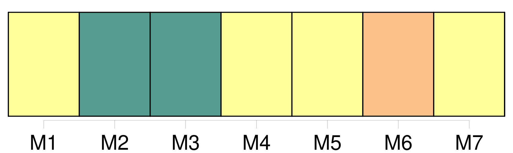

Longueur nb maillons : 68 mentions |
  |
Lorsqu'il n'aura pas existé de registres, ou qu'ils seront perdus, la preuve en sera reçue tant par titres que par témoins ; et dans ces cas, [les mariages] , naissances et décès, pourront être prouvés tant par les registres et papiers émanés des pères et mères décédés, que par témoins. [41 phrases]
Des actes de [mariage] [1 phrases] Avant la célébration du [mariage] , l'officier de l'état civil fera deux publications, à huit jours d'intervalle, un jour de dimanche, devant la porte de la maison commune. [4 phrases]
[Le mariage] ne pourra être célébré avant le troisième jour ; depuis et non compris celui de la seconde publication. [1 phrases]
Si [le mariage] n'a pas été célébré dans l'année, à compter de l'expiration du délai des publications, [il] ne pourra plus être célébré qu'après que de nouvelles publications auront été faites dans la forme ci-dessus prescrite. [1 phrases]
Les actes d'opposition [au mariage] seront signés sur l'original et sur la copie par les opposans ou par leurs fondés de procuration spéciale et authentique ; ils seront signifiés, avec la copie, de la procuration à la personne ou au domicile des parties et à l'officier de l'état civil, qui mettra son visa sur l'original. [3 phrases]
En cas d'opposition, l'officier de l'état civil ne pourra célébrer [le mariage] , avant qu'on lui en ait remis la mainlevée, sous peine de trois cents francs d'amende, et de tous dommages-intérêts. [1 phrases]
S'il n'y a point d'opposition, il en sera fait mention dans l'acte de [mariage] ; et si les publications ont été faites dans plusieurs communes, les parties remettront un certificat délivré par l'officier de l'état civil de chaque commune, constatant qu'il n'existe point d'opposition. [7 phrases] L'acte de notoriété sera présenté au tribunal de première instance du lieu où doit se célébrer [le mariage] [4 phrases] [Le mariage] sera célébré dans la commune où l'un des deux époux aura son domicile.
Ce domicile, quant [au mariage] , s'établira par six mois d'habitation continue dans la même commune. [1 phrases] Le jour désigné par les parties après les délais des publications, l'officier de l'état civil, dans la maison commune, en présence de quatre témoins parens ou non parens, fera lecture aux parties, des pièces ci-dessus mentionnées, relatives à leur état et aux formalités [du mariage] et du chapitre VI du titre [du Mariage] , sur les Droits et les Devoirs respectifs des époux.
Il recevra de chaque partie, l'une après l'autre, la déclaration qu'elles veulent se prendre pour mari et femme ; il prononcera, au nom de la loi, qu'elles son unies par [le mariage] , et il en dressera acte sur-le-champ. [1 phrases]
On énoncera dans l'acte de [mariage] , [56 phrases]
Les publications de [mariage des militaires et employés] à la suite des armées, seront faites au lieu de leur dernier domicile elles seront mises en outre, vingt-cinq jours avant la célébration [du mariage] , à l'ordre du jour du corps, pour les individus qui tiennent à un corps ; et à celui de l'armée ou du corps d'armée, pour les officiers sans troupes, et pour les employés qui en font partie. [1 phrases]
Immédiatement après l'inscription sur le registre, de l'acte de célébration du [mariage] l'officier chargé de la tenue du registre en enverra une expédition à l'officier de l'état civil du dernier domicile des époux. [115 phrases]
Des effets de l'Absence, relativement [au Mariage] [12 phrases]
[Du mariage] [3 phrases]
Des qualités et conditions requises pour pouvoir contracter [mariage] [1 phrases]
L'homme avant dix-huit ans révolus, la femme avant quinze ans révolus, ne peuvent contracter [mariage] [3 phrases]
Il n'y a pas de [mariage] lorsqu'il n'y a point de consentement. [3 phrases]
Le fils qui n'a pas atteint l'âge de vingt-cinq ans accomplis, la fille qui n'a pas atteint l'âge de vingt-un ans accomplis, ne peuvent contracter [mariage] sans le consentement de leurs père et mère : en cas de dissentiment, le consentement du père suffit. [6 phrases]
Les enfans de famille ayant atteint la majorité fixée par l'article 148, sont tenus, avant de contracter [mariage] , de demander, par un acte respectueux et formel, le conseil de leur père et de leur mère, ou celui de leurs aïeuls et aïeules, lorsque leur père et leur mère sont décédés, ou dans l'impossibilité de manifester leur volonté. [3 phrases]
Depuis la majorité fixée par l'article 148, jusqu'à l'âge de trente ans accomplis pour les fils, et jusqu'à l'âge de vingt-cinq ans accomplis pour les filles, l'acte respectueux prescrit par l'article précédent, et sur lequel il n'y aurait pas de consentement [au mariage] , sera renouvelé deux autres fois, de mois en mois ; et un mois après le troisième acte, il pourra être passé outre à la célébration [du mariage] [1 phrases]
Après l'âge de trente ans, il pourra être, à défaut de consentement sur un acte respectueux, passé outre, un mois après, à la célébration [du mariage] [3 phrases] En cas d'absence de l'ascendant auquel eût dû être fait l'acte respectueux, il sera passé outre à la célébration [du mariage] , en représentant le jugement qui aurait été rendu pour déclarer l'absence, ou, à défaut de ce jugement, celui qui aurait ordonné l'enquête, ou, s'il n'y a point encore eu de jugement, un acte de notoriété délivré par le juge de paix du lieu où l'ascendant a eu son dernier domicile connu. [2 phrases]
Les officiers de l'état civil qui auraient procédé à la célébration des mariages contractés par des fils n'ayant pas atteint l'âge de vingt-cinq ans accomplis, ou par des filles n'ayant pas atteint l'âge de vingt-un ans accomplis, sans que le consentement des pères et mères, celui des aïeuls et aïeules, et celui de la famille, dans le cas où ils sont requis, soient énoncés dans l'acte de [mariage] , seront, à la diligence des parties intéressées et du commissaire du Gouvernement près le tribunal de première instance du lieu où [le mariage] aura été célébré, condamnés à l'amende portée par l'article 192, et, en outre, à un emprisonnement dont la durée ne pourra être moindre de six mois. [1 phrases]
Lorsqu'il n'y aura pas eu d'actes respectueux, dans les cas où ils sont prescrits, l'officier de l'état civil qui aurait célébré [le mariage] , sera condamné à la même amende, et à un emprisonnement qui ne pourra être moindre d'un mois. [5 phrases]
S'il n'y a ni père ni mère, ni aïeuls ni aïeules, ou s'ils se trouvent tous dans l'impossibilité de manifester leur volonté, les fils ou filles mineurs de vingt-un ans ne peuvent contracter [mariage] sans le consentement du conseil de famille. [1 phrases]
En ligne directe, [le mariage] est prohibé entre tous les ascendans et descendans légitimes ou naturels, et les alliés dans la même ligne. [1 phrases]
En ligne collatérale, [le mariage] est prohibé entre le frère et la sœur légitimes ou naturels, et les alliés au même degré. [1 phrases]
[Le mariage] est encore prohibé entre l'oncle et la nièce, la tante et le neveu. [3 phrases]
Des formalités relatives à la célébration [du mariage] [1 phrases]
[Le mariage] sera célébré publiquement, devant l'officier civil du domicile de l'une des deux parties. [5 phrases]
Si les parties contractantes, ou l'une d'elles, sont, relativement [au mariage] , sous la puissance d'autrui, les publications seront encore faites à la municipalité du domicile de ceux sous la puissance desquels elles se trouvent. [5 phrases]
Dans les trois mois après le retour du Français sur le territoire de la République, l'acte de célébration du mariage contracté en pays étranger, sera transcrit sur le registre public [des mariages du lieu de son domicile] [1 phrases]
Des oppositions [au mariage] [1 phrases]
Le droit de former opposition à la célébration [du mariage] , appartient à la personne engagée par [mariage] avec l'une des deux parties contractantes. [1 phrases]
Le père, et à défaut du père, la mère, et à défaut de père et mère, les aïeuls et aïeules, peuvent former opposition [au mariage] de leurs enfans et descendans, encore que ceux -ci aient vingt-cinq ans accomplis. [7 phrases]
Tout acte d'opposition énoncera la qualité qui donne à l'opposant le droit de la former ; il contiendra élection de domicile dans le lieu où [le mariage] devra être célébré ; il devra également, à moins qu'il ne soit fait à la requête d'un ascendant, contenir les motifs de l'opposition : le tout à peine de nullité, et de l'interdiction de l'officier ministériel qui aurait signé l'acte contenant opposition. [7 phrases]
Des demandes en nullité de [mariage] [2 phrases]
Lorsqu'il y a eu erreur dans la personne, [le mariage] ne peut être attaqué que par celui des deux époux qui a été induit en erreur. [5 phrases] L'action en nullité ne peut plus être intentée ni par les époux, ni par les parens dont le consentement était requis, toutes les fois que [le mariage] a été approuvé expressément ou tacitement par ceux dont le consentement était nécessaire, ou lorsqu'il s'est écoulé une année sans réclamation de leur part, depuis qu'ils ont eu connaissance [du mariage]
Elle ne peut être intentée non plus par l'époux, lorsqu'il s'est écoulé une année sans réclamation de sa part, depuis qu'il a atteint l'âge compétent pour consentir par lui-même [au mariage] [15 phrases]
Le commissaire du Gouvernement, dans tous les cas auxquels s'applique l'article 184, et sous les modifications portées en l'article 185, peut et doit demander la nullité [du mariage] , du vivant des deux époux, et les faire condamner à se séparer. [3 phrases]
Si [le mariage] n'a point été précédé des deux publications requises, ou s' [il] n'a pas été obtenu des dispenses permises par la loi, ou si les intervalles prescrits dans les publications et célébrations n'ont point été observés, le commissaire fera prononcer contre l'officier public une amende qui ne pourra excéder trois cents francs ; et, contre les parties contractantes, ou ceux sous la puissance desquels elles ont agi, une amende proportionnée à leur fortune. [1 phrases]
Les peines prononcées par l'article précédent, seront encourues par les personnes qui y sont désignées, pour toute contravention aux règles prescrites par l'article 165, lors même que ces contraventions ne seraient pas jugées suffisantes pour faire prononcer la nullité [du mariage] [1 phrases]
Nul ne peut réclamer le titre d'époux et les effets civils [du mariage] , s'il ne représente un acte de célébration inscrit sur le registre de l'état civil, sauf les cas prévus par l'article 46 au titre des Actes de l'état civil. [1 phrases]
La possession d'état ne pourra dispenser les prétendus époux qui l'invoqueront respectivement, de représenter l'acte de célébration [du mariage] devant l'officier de l'état civil. [5 phrases]
Lorsque la preuve d'une célébration légale [du mariage] se trouve acquise par le résultat d'une procédure criminelle, l'inscription du jugement sur les registres de l'état civil assure [au mariage] , à compter du jour de [sa] célébration, tous les effets civils, tant à l'égard des époux, qu'à l'égard des enfans issus de [ce mariage] [1 phrases]
Si les époux ou l'un d'eux sont décédés sans avoir découvert la fraude, l'action criminelle peut être intentée par tous ceux qui ont intérêt de faire déclarer [le mariage valable] , et par le commissaire du Gouvernement. [7 phrases]
Des obligations qui naissent [du mariage] [1 phrases]
Les époux contractent ensemble, par le fait seul [du mariage] , l'obligation de nourrir, entretenir et élever leurs enfans. [1 phrases]
L'enfant n'a pas d'action contre ses père et mère pour un établissement par [mariage] ou autrement. [42 phrases]
Toute autorisation générale, même stipulée par contrat de [mariage] , n'est valable que quant à l'administration des biens de la femme. [7 phrases]
De la dissolution [du mariage] [1 phrases]
[Le mariage] se dissout, |
La ressource peut être téléchargée sur la page Ortolang
Si vous avez des questions ou vous voyez des erreurs, merci d'envoyer un mail à silvia.federzoni89@gmail.com
Site développé par S. Federzoni (contact)